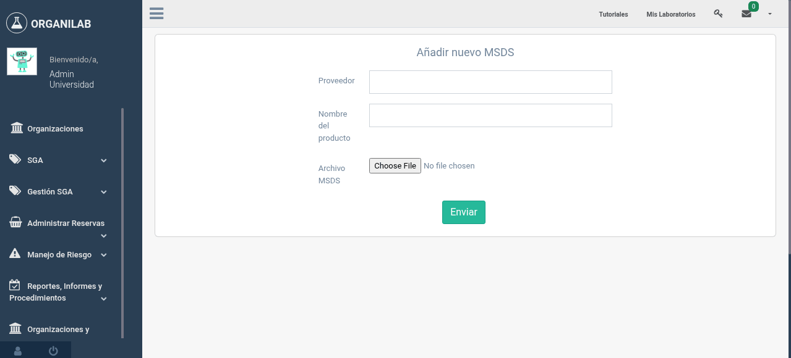
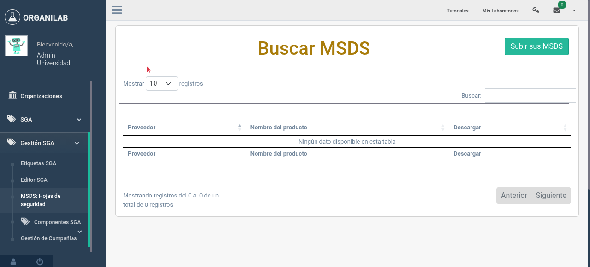
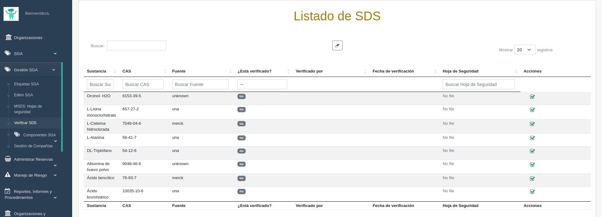

4. Hojas de Seguridad (MSDS)
Las Hojas de Datos de Seguridad (MSDS, por sus siglas en inglés: Material Safety Data Sheet) son documentos esenciales que proporcionan información detallada sobre las propiedades, peligros, manejo seguro y procedimientos de emergencia de cada sustancia química.
¿Qué es una Hoja de Datos de Seguridad?
Una MSDS (también conocida como SDS - Safety Data Sheet, o FDS - Ficha de Datos de Seguridad) es un documento estandarizado que describe las características de una sustancia química. Según el SGA, toda hoja de seguridad debe contener exactamente 16 secciones en un orden específico:
| Sección | Título | Contenido principal |
|---|---|---|
| 1 | Identificación del producto | Nombre del producto, usos, datos del proveedor, teléfono de emergencia |
| 2 | Identificación de peligros | Clasificación SGA, elementos de la etiqueta, otros peligros |
| 3 | Composición / Información de ingredientes | Identidad química, números CAS, concentraciones |
| 4 | Primeros auxilios | Medidas por vía de exposición (inhalación, contacto, ingestión) |
| 5 | Medidas contra incendios | Medios de extinción, peligros específicos, equipo de protección |
| 6 | Medidas en caso de derrame | Precauciones personales, métodos de contención y limpieza |
| 7 | Manipulación y almacenamiento | Precauciones de manejo seguro, condiciones de almacenamiento |
| 8 | Controles de exposición / Protección personal | Límites de exposición, equipo de protección personal (EPP) |
| 9 | Propiedades físicas y químicas | Apariencia, olor, pH, punto de ebullición, densidad, solubilidad |
| 10 | Estabilidad y reactividad | Condiciones a evitar, materiales incompatibles, productos de descomposición |
| 11 | Información toxicológica | Vías de exposición, efectos agudos y crónicos, datos de toxicidad |
| 12 | Información ecológica | Toxicidad acuática, persistencia, bioacumulación |
| 13 | Consideraciones de eliminación | Métodos de eliminación segura, normativa aplicable |
| 14 | Información de transporte | Número ONU, clase de peligro para transporte, embalaje |
| 15 | Información reglamentaria | Regulaciones nacionales e internacionales aplicables |
| 16 | Otra información | Fecha de elaboración, revisión, abreviaturas, referencias |
Gestión de MSDS en Organilab
Organilab gestiona las hojas de seguridad a través del modelo MSDSObject, que permite asociar archivos PDF de hojas de seguridad a los productos químicos registrados en el sistema. Los campos principales son:
- Proveedor: El fabricante o distribuidor que proporciona la hoja de seguridad.
- Archivo (PDF): El documento de la hoja de seguridad en formato PDF.
- Producto: La sustancia o reactivo al que corresponde la hoja.
Subir una Hoja de Seguridad
- Acceda al módulo MSDS desde el menú de la organización (ruta: /msds/<org_pk>/).
- Seleccione la opción Agregar hoja de seguridad.
- Seleccione el proveedor de la lista disponible o registre uno nuevo.
- Suba el archivo PDF de la hoja de seguridad desde su computadora.
- Asocie la hoja al producto químico correspondiente seleccionándolo del catálogo.
- Guarde el registro para que la hoja quede disponible para consulta.

Formulario para subir una nueva hoja de seguridad en el módulo MSDS
Consultar Hojas de Seguridad
Las hojas de seguridad pueden consultarse de varias formas dentro de Organilab:
- Desde el módulo MSDS: Navegue al listado completo de hojas de seguridad disponibles en la organización y busque por nombre de producto o proveedor.
- Desde la vista de sustancia: Al consultar los detalles de un reactivo, encontrará un enlace directo a su hoja de seguridad si esta ha sido cargada.
- Desde las características de sustancia: El campo security_sheet permite adjuntar directamente un archivo de hoja de seguridad a las características de la sustancia.

Lista de hojas de seguridad disponibles con opciones de búsqueda y descarga
Árbol de Seguridad (SecurityLeaf)
El módulo MSDS de Organilab también incluye el modelo SecurityLeaf, que permite organizar la información de seguridad en una estructura de árbol jerárquico (OrganilabNode). Esto es útil para:
- Organizar las hojas de seguridad por categorías o departamentos.
- Crear una biblioteca estructurada de documentación de seguridad.
- Facilitar la navegación y búsqueda de información de seguridad.
- Mantener un registro ordenado de toda la documentación requerida.
Verificación de Hojas de Seguridad
La verificación de hojas de seguridad es un proceso de control de calidad que permite a los usuarios autorizados confirmar que la información de una SDS es legítima, vigente y corresponde correctamente a la sustancia química registrada. Este proceso garantiza la trazabilidad y confiabilidad de la documentación de seguridad.
- La hoja de seguridad proviene de una fuente confiable (fabricante oficial, distribuidor autorizado).
- El contenido corresponde exactamente a la sustancia química registrada en el sistema.
- La información está actualizada según la última revisión del fabricante.
- Se cumple con los requisitos de auditoría y cumplimiento normativo.
Fuentes de SDS Reconocidas
Organilab reconoce las siguientes fuentes oficiales de hojas de seguridad:
Fabricantes
- Merck/Sigma-Aldrich
- Fisher/Thermo Scientific
- Honeywell/Fluka
- JT Baker
Distribuidores
- Panreac
- Carlo Erba
Bases de datos
- PubChem (NCBI)
- Manual (carga directa)
- Desconocido
Proceso de Verificación
Para verificar una hoja de seguridad, siga estos pasos:
- Acceda al módulo MSDS y seleccione Verificación de SDS.
- Visualice la tabla de hojas de seguridad pendientes de verificación.
- Revise la información de cada SDS: sustancia, fuente, número CAS y archivo adjunto.
- Descargue y revise el archivo PDF para confirmar que corresponde a la sustancia.
- Haga clic en el botón Verificar en la columna de acciones.
- Confirme la verificación en el diálogo de confirmación.

Lista de hojas de seguridad con estado de verificación y acciones disponibles
Estados de Verificación
No Verificado
La hoja de seguridad ha sido cargada al sistema pero aún no ha sido revisada por un usuario autorizado. Se muestra con una insignia gris "No" en la columna de verificación.
Verificado
Un usuario autorizado ha confirmado que la SDS es legítima y corresponde a la sustancia. Se registra quién verificó y cuándo. Se muestra con una insignia verde "Sí".
Registro de Auditoría
Cada acción de verificación o desverificación queda registrada en el sistema de auditoría de Organilab, incluyendo:
- Usuario que realizó la acción
- Fecha y hora de la acción
- Estado anterior y nuevo de la verificación
Importancia de las MSDS
Las hojas de seguridad son la fuente principal de información para:
- Respuesta a emergencias: Contienen instrucciones de primeros auxilios, medidas contra incendios y procedimientos en caso de derrames.
- Protección personal: Especifican el equipo de protección personal necesario para manipular cada sustancia.
- Almacenamiento seguro: Indican las condiciones de almacenamiento adecuadas y las incompatibilidades químicas.
- Eliminación de residuos: Describen los métodos apropiados para desechar la sustancia de manera segura.
- Cumplimiento normativo: Son un requisito legal que debe estar disponible para inspecciones y auditorías.
Vista de detalle de una hoja de seguridad asociada a un reactivo en Organilab